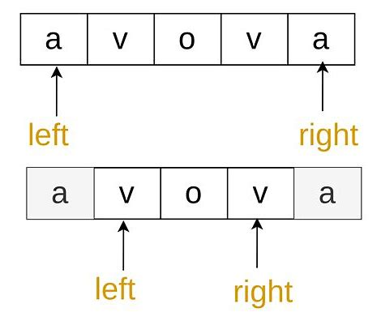
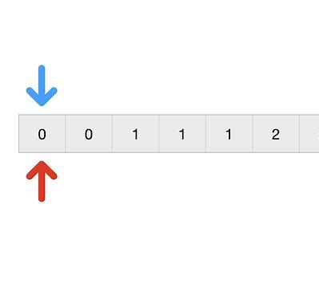
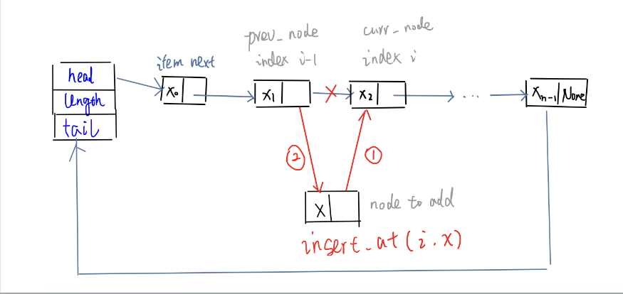
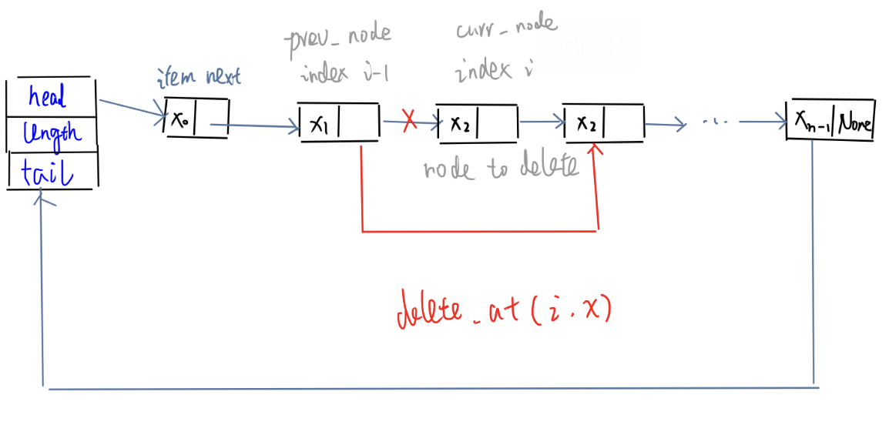
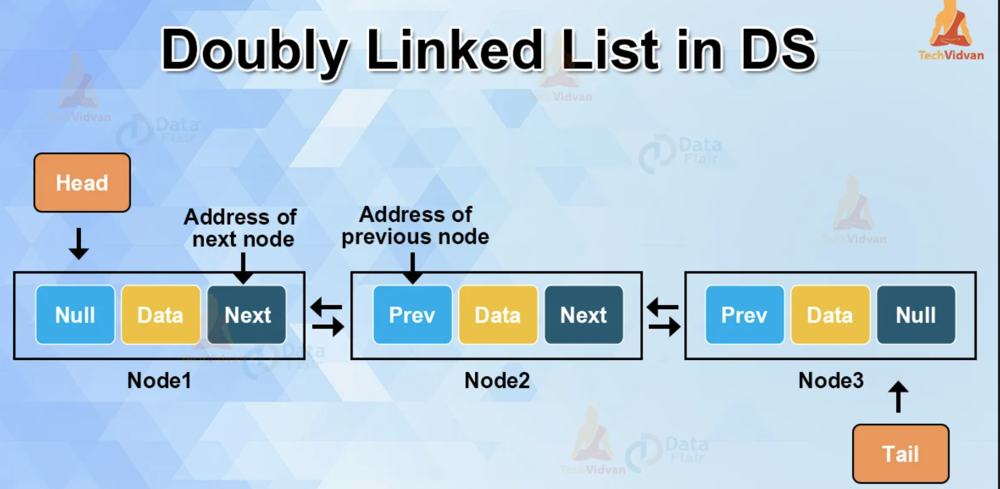
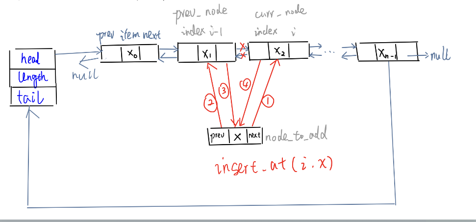
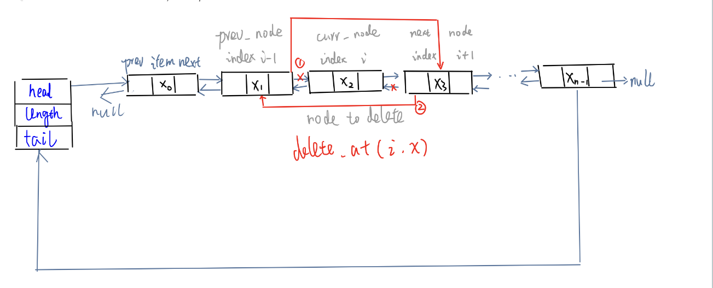
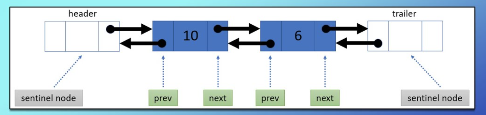
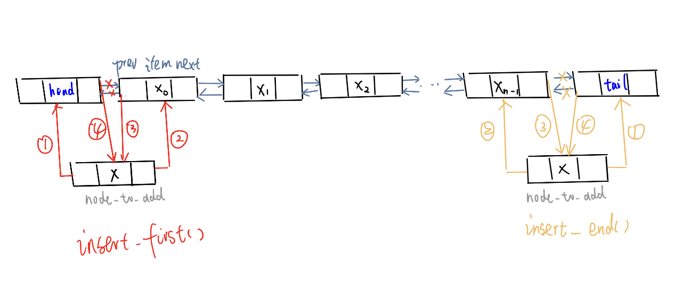
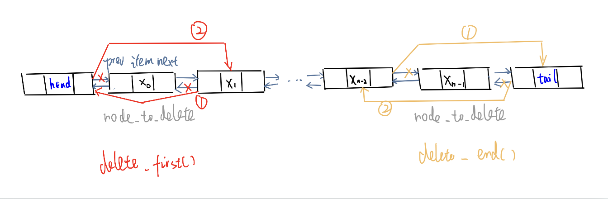

Code Template - Data Structure¶
Array & String¶
Two Pointers¶
Having two integer variables that both move along an iterable, each representing an index of the array or string, usually named something like i and j, or left and right.
Two pointers - case 1: one input, opposite ends -> squeeze¶
Figure: Two Pointers - Case 1

| Aspect | Details |
|---|---|
| Idea | Start the pointers at the first and last indices and move them towards each other until they meet. |
| When to use | reverse array/string in place (e.g., check palindrome - after reversing, stay the same) |
| Complexity | - Time: \(\color{blue}O(n)\) (where n = arr.length) if we can keep the work inside each iteration at \(O(1)\) because the pointers start \(n\) away from each other and move at least one step closer in every iteration -> we will never have more than \(O(n)\) iterations - Space: \(\color{blue}O(1)\) because we only use two integer variables. |
Python
For array input:def fn(arr):
ans = INIT
# Step 1. init two pointers: point to first and last element
left = 0
right = len(arr) - 1
# Step 2. loop: at each iteration, move two pointers towards each other, until they meet or cross (== or >)
while left < right: # Time: O(n)
# do some logic here， depending on the problem
# move two pointers closer: choose one or more from three options
if CONDITION:
left += 1 # Option 1. increment the left pointer
if CONDITION:
right -= 1 # Option 2. decrement the right pointer
if CONDITION:
# do some logic here
left += 1 # Option 3. move both pointers at the same time
right -= 1
return ans
def fn(s):
arr = list(s) # convert the string to a list
ans = INIT
# Step 1. init two pointers: point to first and last element
left = 0
right = len(arr) - 1
# Step 2. loop: at each iteration, move two pointers towards each other
while left < right:
# do some logic here depending on the problem
# move two pointers closer: choose one or more from three options
if CONDITION:
left += 1
if CONDITION:
right -= 1
if CONDITION:
left += 1
right -= 1
return ''.join(arr) # join the list back to string
C++
int fn(vector<int>& arr) {
int left = 0;
int right = static_cast<int>(arr.size()) - 1; // convert to int because std::vector::size() returns an unsigned integer type std::size_t, if arr is empty, std::size_t cannot represent -1 and will leads to a super big number
int ans = 0;
while (left < right) {
// do some logic here with left and right pointers, depending on the problem
if (CONDITION) {
left++;
}
if (CONDITION) {
right--;
}
}
return ans;
}
Two pointers - case 2: two inputs, exhaust both¶
Figure: Two Pointers - Case 2

| Aspect | Details |
|---|---|
| Idea | start at the same first index 0, then move along both inputs simultaneously until all elements have been checked. |
| When to use | - Check subsequence - Combine two arrays |
| Complexity | - Time: \(\color{blue}O(m+n)\) (where \(m = \text{arr1.length}\), \(n = \text{arr2.length}\)) if we can keep the work inside each iteration at \(O(1)\) because at every iteration, we move at least one pointer forward, and the pointers cannot be moved forward more than \(n + m\) times - Space: \(\color{blue}O(1)\) because we only use two integer variables. |
Python
def fn(arr1, arr2):
i = j = 0 # Step 1. create two pointers: each pointer for each iterable, each start at the first index 0.
ans = INIT
# Step 2. loop: at each iteration, move one or two pointers forward, until one of the pointers reaches the end of its iterable (==).
while i < len(arr1) and j < len(arr2):
# do some logic here depending on the problem
# Step 3. incrementing either one of the pointers, or both.
if CONDITION:
# do some logic here
i += 1
if CONDITION:
j += 1
# Step 4. Optional: loop: iterate through the rest of the elements to make sure both iterables are exhausted, because when the above while loop finishes, one point is at the end, the other pointer might not be at the end.
# Note that only one of the following loops would run in reality.
while i < len(arr1):
# Do some logic here
i += 1
while j < len(arr2):
# Do some logic here
j += 1
return ans
C++
int fn(vector<int>& arr1, vector<int>& arr2) {
int i = 0, j = 0
Type ans = INIT;
while (i < arr1.size() && j < arr2.size()) {
// do some logic here
if (CONDITION) {
i++;
} else {
j++;
}
}
while (i < arr1.size()) {
// do logic
i++;
}
while (j < arr2.size()) {
// do logic
j++;
}
return ans;
}
Two pointers - other cases¶
| Cases | When to use |
|---|---|
| starting the pointers at different indices, instead of first and last index | |
| only be one input array/string, but we still initialize both pointers at the first index and move both forward, e.g., fast slow pointer | |
| three pointers |
Linked List¶
Tips: It's important to build an intuition behind how to correctly re-assign pointers. The best way is to see the process visually through examples.
Singly-Linked List¶
Definition - Singly-Linked List - Use Raw Pointer¶
Python
class ListNode:
def __init__(self, val): # O(1)
self.val = val
self.next = None
# get the node with specific offset away
def later_node_recursion(self, offset):
if offset == 0: # base case
return self
if offset < 0:
raise ValueError("offset must be non-negative")
if self.next is None:
raise IndexError("offset exceeds list length")
return self.next.later_node_recursion(offset - 1) # time complexity: O(offset), space: O(offset)
def later_node_iterative(self, offset):
if offset < 0:
raise ValueError("offset must be non-negative")
curr_node = self
for _ in range(offset): # time complexity: O(offset), space: O(1)
if curr_node.next is None:
raise IndexError("offset exceeds list length")
curr_node = curr_node.next
return curr_node
# example linked list
one = ListNode(1)
two = ListNode(2)
three = ListNode(3)
head = one
one.next = two
two.next = three
C++
struct ListNode {
int val;
ListNode *next;
// constructor overloading
ListNode() : val(0), next(nullptr) {}
ListNode(int val) : val(val), next(nullptr) {}
ListNode(int val, ListNode *next) : val(val), next(next) {}
};
int main() {
// Dynamically allocate nodes on heap memory
ListNode* one = new ListNode(1);
ListNode* two = new ListNode(2);
ListNode* three = new ListNode(3);
ListNode* head = one; // head points to the first node (one)
// Connecting the nodes to form: one -> two -> three
one->next = two; // memory address assignment
two->next = three;
// In practice, we need to delete these nodes using `delete` to avoid memory leaks.
}
Definition - Singly-Linked List - Use Modern C++ Smart Pointer¶
C++
#include <memory>
struct ListNode {
int val;
std::unique_ptr<ListNode> next; // unique ownership
// constructor overloading
ListNode() : val(0), next(nullptr) {}
ListNode(int val) : val(val), next(nullptr) {}
ListNode(int val, ListNode *next) : val(val), next(next) {}
};
int main() {
// no raw pointers or manual deletion
auto one = std::make_unique<ListNode>(1); // create ListNode object, smart unique pointer own this node 1.
auto two = std::make_unique<ListNode>(2);
one->next = std::move(two); // ownership transferred (then previous pointer two becomes nullptr)
// No need for manual delete, smart pointers handle it automatically
}
Add/Delete Node - Singly-Linked List¶
At first, obtain the reference to the previous node prev (the node at position \(i - 1\)) by iterating from the head.
Typically we do these operations on the fly, when iterating through the list (these functions are just demonstration).
Figure: Singly Linked List - insert at random position: node_to_add.next points to preNode.next, then change preNode.next points to node_to_add

Figure: Singly Linked List - Delete at random position: change preNode.next pointer to preNode.next.next

Python
# Obtain the reference by iterating from the head - time: O(n)
def add_node(prev_node, node_to_add): # Time: O(1)
node_to_add.next = prev_node.next
prev_node.next = node_to_add
def delete_node(prev_node):
prev_node.next = prev_node.next.next
C++
// Obtain the reference by iterating from the head - time: O(n)
void addNode(ListNode* prevNode, ListNode* nodeToAdd) {
nodeToAdd->next = prevNode->next; // Time: O(1)
prevNode->next = nodeToAdd;
}
void deleteNode(ListNode* prevNode) {
prevNode->next = prevNode->next->next;
}
Traverse the Linked List¶
Example: get the sum of all values from an integer linked list.
Traverse - Iterative¶
Using dummy pointers curr without losing a reference to the head.
Python
def get_sum(head):
ans = 0
curr = head
while curr: # The final node's next pointer is null. Therefore, after the final node, the while loop ends.
# ans += curr.val
curr = curr.next
return ans
C++
int getSum(ListNode* head) {
int ans = 0;
ListNode* curr = head;
while (curr != nullptr) {
// ans += curr->val;
curr = curr->next;
}
return ans;
}
Traverse - Recursive¶
Python
def get_sum(curr):
if not curr:
return 0
return curr.val + get_sum(curr.next)
C++
int getSum(ListNode* curr) {
if (curr == nullptr) {
return 0;
}
return curr->val + getSum(curr->next);
}
Doubly linked list¶
Figure: Doubly linked list - similar to singly linked list, but each node also contains a pointer to the previous node prev, and it allows iteration in both directions.

Definition - Doubly linked list¶
Python
class ListNode:
def __init__(self, val):
self.val = val
self.next = None
self.prev = None
C++
struct ListNode {
int val;
ListNode *next;
ListNode *prev;
ListNode() : val(0), next(nullptr), prev(nullptr) {}
ListNode(int val) : val(val), next(nullptr), prev(nullptr) {}
ListNode(int val, ListNode* next, ListNode* prev) : val(val), next(next), prev(prev) {}
};
Add/Delete Node - Doubly-Linked List¶
With a doubly linked list, we only need a reference to the current node at \(i\), because we can simply reference the prev pointer of that node to get the node at \(i - 1\), and next pointer of that node to get the node at \(i + 1\),
Extra work: update the prev pointers
Figure: Doubly Linked List - insert at random position: node_to_add.next points to curr_node, node_to_add.prev points to prev_node, prev_node.next points to curr_node, curr_node.prev points to curr_node

Python
def add_node(curr_node, node_to_add):
# get prev node reference
prev_node = curr_node.prev
# relink
node_to_add.next = curr_node
node_to_add.prev = prev_node
prev_node.next = node_to_add
curr_node.prev = node_to_add
C++
void addNode(ListNode* currNode, ListNode* nodeToAdd) {
ListNode* prevNode = currNode->prev;
nodeToAdd->next = currNode;
nodeToAdd->prev = prevNode;
prevNode->next = nodeToAdd;
currNode->prev = nodeToAdd;
}
Figure: Doubly Linked List - delete at random position: prev_node_next points to next_node, then change next_node.prev points to prev_node

Python
def delete_node(curr_node):
# get prev, next node reference
prev_node = curr_node.prev
next_node = curr_node.next
# relink
prev_node.next = next_node
next_node.prev = prev_node
C++
void deleteNode(ListNode* currNode) {
ListNode* prevNode = currNode->prev;
ListNode* nextNode = currNode->next;
prevNode->next = nextNode;
nextNode->prev = prevNode;
}
Add/Delete First/Last node using sentinel nodes(head, tail) - Doubly-Linked lists¶
To easily add and remove at the end or tail of the linked list. No need to judge the edge cases if head or tail == nullptr
Figure: Doubly Linked List - with sentinel nodes(head, tail). Even when there are no nodes in a linked list, you still keep a head and tail. The real head node of the linked list is head.next and the real tail node is tail.prev. The sentinel nodes themselves are not part of linked list.

Figure: Doubly Linked List - with sentinel nodes(head, tail). insert at start/end

Figure: Doubly Linked List - with sentinel nodes(head, tail). delete at start/end

Python
def add_to_start(node_to_add):
node_to_add.prev = head
node_to_add.next = head.next
head.next.prev = node_to_add
head.next = node_to_add
def add_to_end(node_to_add):
node_to_add.next = tail
node_to_add.prev = tail.prev
tail.prev.next = node_to_add
tail.prev = node_to_add
def remove_from_start():
if head.next == tail: # special case: empty
return
# get reference
node_to_remove = head.next
# relink
node_to_remove.next.prev = head
head.next = node_to_remove.next
def remove_from_end():
if head.next == tail: # special case: empty
return
# get reference
node_to_remove = tail.prev
# relink
node_to_remove.prev.next = tail
tail.prev = node_to_remove.prev
# create empty linked list with sentinel nodes
head = ListNode(None)
tail = ListNode(None)
head.next = tail
tail.prev = head
C++
void addToStart(ListNode* nodeToAdd) {
nodeToAdd->prev = head;
nodeToAdd->next = head->next;
head->next->prev = nodeToAdd;
head->next = nodeToAdd;
}
void addToEnd(ListNode* nodeToAdd) {
nodeToAdd->next = tail;
nodeToAdd->prev = tail->prev;
tail->prev->next = nodeToAdd;
tail->prev = nodeToAdd;
}
void removeFromStart() {
if (head->next == tail) {
return;
}
ListNode* nodeToRemove = head->next;
nodeToRemove->next->prev = head;
head->next = nodeToRemove->next;
}
void removeFromEnd() {
if (head->next == tail) {
return;
}
ListNode* nodeToRemove = tail->prev;
nodeToRemove->prev->next = tail;
tail->prev = nodeToRemove->prev;
}
ListNode* head = new ListNode(-1);
ListNode* tail = new ListNode(-1);
head->next = tail;
tail->prev = head;
Reversing a singly-linked list¶
a typical problem or an intermediate step
Python
def reverse_list(head):
prev = None # to track the previous node
curr = head # to track the current node
while curr: # traverse until the tail
next_node = curr.next # 1. keep a reference to the original next node, make sure we don't lose it
curr.next = prev # 2. reverse the direction of the next pointer
prev = curr # 3. Update prev for the next iteration
curr = next_node # 4. Update curr for the next iteration
return prev # After the final iteration, prev points to the original tail, which is the new head